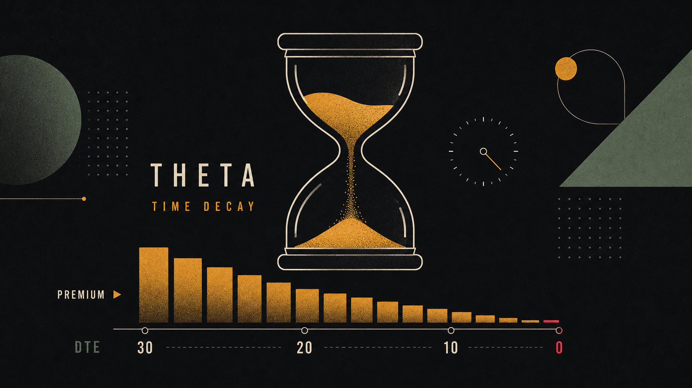
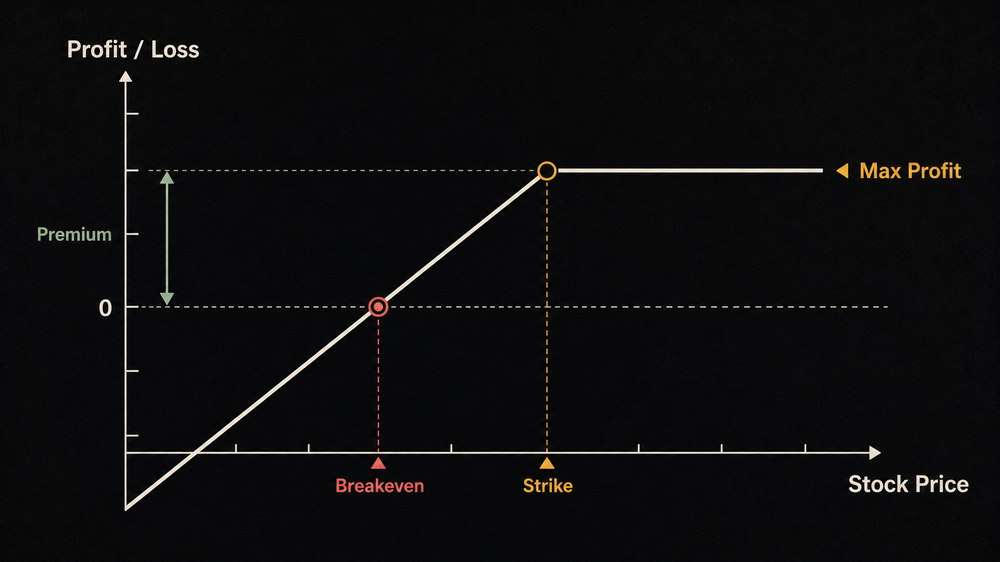
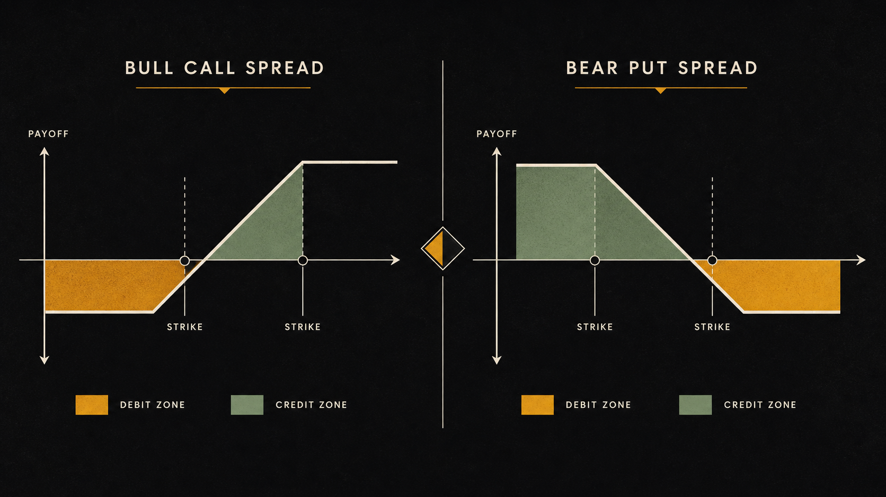

学完了所有理论，最好的检验方式是把它们放进真实发生过的市场故事里。这一章复盘三个截然不同的案例：一个长达三年的 AI 大牛市、一次单日蒸发 $2,300 亿市值的惨烈暴跌，以及一场在 48 小时内完成的银行倒闭。它们都曾经真实发生，它们的信号今天依然适用。
如何读一个真实案例
在我们进入具体案例之前，先说清楚读案例的正确姿势。许多人读案例会犯一个错误——用"事后诸葛"的视角去评判，觉得一切都理所当然：NVDA 会大涨、META 会暴跌、SVB 会倒闭，"谁都能看出来"。
但真正有价值的问题是：在事情发生之前，哪些信号是可以被发现的？当时大多数人为什么看不见它们？
读每一个案例，请带着以下三个框架性问题：
- 叙事转折点：什么时候市场对这家公司/资产的"故事"发生了根本性改变？这个改变有没有可以提前捕捉的基本面信号？
- 价格行为：基本面变化之前，股价是否已经出现了技术面信号（突破、背离、异常成交量）？
- 风险管理应用：如果你在这个时间节点持有该股票，正确的仓位和止损策略应该是什么？
案例一：英伟达（NVDA）的 AI 长牛
英伟达（NVDA）的故事，是过去十年美股市场中最戏剧性的基本面转变之一。它不是一夜暴富，而是一个经历了崩溃、迷茫、然后爆发的三幕剧。
第一幕：游戏 GPU 公司（2019–2021）
在大多数人眼中，英伟达是一家做游戏显卡的公司。GeForce 系列是它的名片，数据中心业务虽然存在，但体量不大。新冠疫情期间，居家办公和游戏需求爆发，NVDA 股价从 2020 年 3 月的低点约 $60，一路涨到 2021 年 11 月的约 $333（复权价），涨幅超过 450%。
第二幕：崩溃与误判（2022）
2022 年对 NVDA 来说是噩梦。三重打击同时袭来：
在 2022 年底，市场的主流叙事是：NVDA 的增长是疫情异常，现在已经回归正常。许多分析师下调目标价，看空声音充斥市场。
第三幕：叙事大转折（2023–2024）
2022 年 11 月 30 日，OpenAI 发布了 ChatGPT。
这一天是 NVDA 命运真正转折的时间点——虽然股价并非立刻反应，但它开启了一个新的叙事：AI 需要 GPU 算力，而 NVIDIA 是唯一能大规模提供 AI 训练算力的公司。
2023 年 5 月的财报彻底炸裂了市场的想象力：
随后发生的一切，成为了市场历史：
| 时间节点 | NVDA 收盘价（复权） | 关键事件 |
|---|---|---|
| 2023年1月初 | $~108 | 年初，AI 热潮开始酝酿 |
| 2023年5月25日 | $~379 | Q2 财报指引炸裂，单日暴涨 24% |
| 2023年底 | $~495 | H100 芯片供不应求，各大云厂商争抢 |
| 2024年1月 | $~613 | 市值突破 $1.2 万亿，超越亚马逊 |
| 2024年6月 | $~1,208（拆股前） | 短暂成为全球市值第一 |
从 2023 年初到 2024 年中，NVDA 的股价涨幅超过 10×。
可以提前发现的信号
事后看，有几个信号是可以在当时捕捉到的：
- 数据中心收入占比快速提升：2022 年即使在下行周期中，NVDA 数据中心业务收入依然稳健，说明需求结构在改变。
- 超大型科技公司的资本支出指引：2022–2023 年，AWS、Azure、Google Cloud、Meta 等均大幅提升 AI 基础设施资本支出，指向 GPU 需求的"卖铲子"逻辑。
- CUDA 生态的护城河：几乎所有主流 AI 框架（PyTorch、TensorFlow）默认运行在 NVIDIA CUDA 上，切换成本极高——这是不对称竞争优势。

案例二：META 2022 年的单日大跌
2022 年 2 月 3 日，Meta（当时刚从 Facebook 改名）在发布 2021 年第四季度财报后的第二天，股价单日暴跌 26.4%，市值蒸发约 $2,320 亿——这是美国股市历史上单只股票单日市值蒸发的最大纪录之一。
这是 Meta 有史以来最糟糕的一天，也是它未来复苏之路的真正起点。
— 市场观察者事后复盘暴跌的三重原因
这次暴跌不是单一原因，而是三个负面因素同时在同一份财报中爆发：
财报数字的具体表现
| 指标 | Q4 2021 实际 | 华尔街预期 | 市场反应 |
|---|---|---|---|
| 每日活跃用户（DAU） | 19.29 亿 | 19.51 亿 | 历史首次环比下降，触发恐慌 |
| Q1 2022 营收指引 | $270–290 亿 | $302 亿 | 远低于预期，显示广告收入持续承压 |
| Reality Labs 亏损 | $101 亿 | — | 全年持续扩大，无明确时间表 |
2022 年全年惨状
那次财报只是 2022 年 META 噩梦的开始。全年股价跌幅 64%，从最高约 $383 跌到年底约 $88。
从技术分析的角度看，一个关键信号早在暴跌前数周就出现了：
- META 的股价在 2021 年底开始跌破 200 日均线，这是大多数机构投资者的重要参考线
- 跌破 200 日均线后，反弹力度非常弱，说明机构在逢高减仓，而不是在逢低接货
- 成交量在每次下跌时明显放大，在每次反弹时明显萎缩——典型的"弱势反弹，强势下跌"模式
故事的后半段：复苏与验证
2022 年底，祖克伯格宣布 Meta 进入"效率之年（Year of Efficiency）"，大规模裁员、砍掉亏损项目、重新聚焦核心广告业务。Reality Labs 亏损依然巨大，但核心业务的重整带来了盈利的快速改善。
更重要的是：广告业务在 AI 精准推荐算法的帮助下出现了结构性改善——即使 ATT 限制了数据，Meta 的 AI 模型通过内部数据学习依然维持了较高的广告效果。
从 2022 年底的低点到 2024 年，META 的股价从约 $88 涨到约 $530，涨幅超过 500%。

案例三：硅谷银行（SVB）的 48 小时崩溃
2023 年 3 月 10 日，硅谷银行（Silicon Valley Bank，SVB）被美国联邦存款保险公司（FDIC）接管。从公告风险到银行被政府接管，只用了不到 48 小时。这是自 2008 年金融危机以来美国最大的银行倒闭事件。
SVB 的商业模式：高度集中的风险
硅谷银行不是普通的零售银行。它的商业模式独特：专门服务科技初创公司和风险投资机构。在 2020–2021 年的 VC 热潮中，大量初创公司拿到融资，把资金存入 SVB——SVB 的存款规模在 2021 年翻了一倍，从约 $1,000 亿增长到超过 $1,800 亿。
问题在于：SVB 把这些存款拿去买了大量长期美国国债和 MBS（抵押贷款支持证券）——在 2021 年利率超低的环境下，这些债券提供了一点可怜的收益，看起来"安全"。
利率上升引爆定时炸弹
2022 年，美联储开始史上最激进的加息周期之一：从接近 0% 的利率加到 5% 以上。债券价格与利率成反比——长期债券对利率最敏感。SVB 持有的债券投资组合出现了巨大的账面亏损（Unrealized Losses）。
资产：10–20 年期国债（无法立刻变现）
48 小时崩溃时间线
| 时间 | 事件 | 市场反应 |
|---|---|---|
| 3月8日（周三） | SVB 宣布出售价值 $210 亿的债券，亏损 $18 亿；同时宣布需要募集 $22.5 亿新股 | 股价当日暴跌 60%，VC 社区开始警觉 |
| 3月9日（周四） | Peter Thiel 旗下基金建议所有被投公司立刻从 SVB 提款；消息在 Twitter/Slack 迅速扩散；单日存款提款申请达 $420 亿 | 股价再跌 60%（盘中），银行无法处理大量提款申请 |
| 3月10日（周五） | 加州监管机构关闭 SVB，FDIC 接管，暂停股票交易 | KRE（区域银行 ETF）单日跌 12%；恐慌蔓延至 First Republic Bank 等 |
| 3月12日（周日） | 美联储、FDIC、财政部联合宣布保护所有存款（包括 25 万以上部分） | 周一银行股企稳，系统性危机被阻断 |
为什么银行挤兑在社交媒体时代更快
传统的银行挤兑需要几天甚至几周：消息口耳相传，人们排队取钱，速度受限于物理排队的速度。
SVB 的挤兑是 21 世纪的版本：一条 Twitter 帖子，一个 Slack 群聊，几百家初创公司的 CFO 同时看到同一条消息，同时发出提款指令。信息级联（Information Cascade）的速度超过了任何传统风控机制能应对的速度。
风险信号：事前可以发现什么？
如果你在 2022 年底或 2023 年初系统地审视区域银行板块，以下信号是可以发现的：
- 财报中的"未实现亏损"（Unrealized Losses）：SVB 的 2022 年年报中，债券组合的未实现亏损约 $150 亿，而公司净资产只有约 $160 亿。这意味着如果被迫变现，银行几乎资不抵债——这个数字是公开披露的。
- 存款结构高度集中：绝大多数存款来自 VC 生态，而 VC 生态在加息周期中资金极度紧张，存款外流压力远高于普通零售银行。
- 技术面：SVB 股票（SIVB）从 2022 年初开始就跌破了所有主要均线，全年跌幅超过 60%——股价早就告诉市场这是问题资产。

三个案例教会了我们什么
把这三个案例放在一起，它们教给我们的，其实是整个课程的核心框架的实战应用。
三条主线的共同逻辑
共同的核心驱动力：信息不对称与信息级联
三个案例中最戏剧性的价格行为，本质上都源于同一个机制：信息级联（Information Cascade）。
NVDA：当市场中的"聪明钱"开始理解 AI 算力需求的规模，他们买入，股价上涨，更多人注意到，更多人买入——正反馈循环形成，直到估值再次充分反映新叙事。
META：当财报数字证实了此前的担忧，机构投资者的"卖出"程序同时启动，零售投资者看到暴跌又加速卖出——负反馈循环在一天内完成了数年的估值调整。
SVB：在风投社区，信任是一种社会共识。当这个共识在 Twitter 上 48 小时内集体崩塌，没有任何物理机制可以阻止数字银行挤兑的速度。
- 业务理解：用一句话解释这家公司如何赚钱。如果你无法清晰解释，你还没准备好买入。
- 收入增长质量：收入是有机增长还是靠并购堆砌？增速是加速还是放缓？未来 3 年的增长驱动力是什么？
- 竞争护城河：为什么竞争对手无法轻易复制这家公司的核心产品或服务？（品牌、网络效应、转换成本、规模效应、专利）
- 估值合理性：相对于历史水平和同行，当前 PE/PS/EV-EBITDA 是偏高还是偏低？增长是否可以为当前估值提供支撑？
- 风险因素（主动找反面）：写出至少三条这笔投资失败的可能原因。如果任何一条发生，你的止损在哪里？
- 仓位和止损：根据 1% 规则或 Kelly 公式计算你的买入股数，确定技术止损或 ATR 止损位置，进场前下好止损单。
- 复盘触发条件：预定一个日期（比如下次财报日），届时重新评估是否持有。如果基本面假设失效，按规则出场，不等"涨回来"。
- 读案例的正确姿势：问"当时哪些信号可以被发现"，而不是用事后视角评判"显然会怎样"。
- NVDA 教训：当基本面呈爆发式增长 + 垄断护城河，传统 PE 分析失效；叙事转折点（如 ChatGPT 发布）是最重要的入场信号；营收增长率比静态 PE 更能反映高增速公司的真实价值。
- META 教训：多重负面因素叠加时先减仓观察；等待基本面复苏验证后再入场；技术面的 200 日均线跌破是重要的风险信号；崩溃不代表不能复苏，但验证才是入场的前提。
- SVB 教训：集中风险（存款结构单一）+ 期限错配（借短买长）= 高度脆弱；社交媒体时代的信息级联使危机蔓延比历史上更快；公开财报中的未实现亏损是早期预警信号。
- 共同主线：三个案例的核心都是信息不对称——谁先理解叙事转变，谁就能在价格完全反映之前行动。
| 中文 | 英文 | 一句话解释 |
|---|---|---|
| 资本利得 | Capital Gains | 卖出资产时，售价高于成本的盈利部分 |
| 久期风险 | Duration Risk | 利率上升导致长期债券价格下跌的风险，持有期限越长，风险越大 |
| 银行挤兑 | Bank Run | 大量存款人同时提款，超过银行即时可用资金的现象 |
| 期限错配 | Duration Mismatch | 用短期负债（存款）投资长期资产（长期债券），利率上升时造成流动性危机 |
| 集中风险 | Concentration Risk | 投资组合或业务过度集中于单一资产、行业或客户群，放大了特定风险的影响 |
| 信息级联 | Information Cascade | 个体根据他人行为调整自己决策，形成正反馈循环，导致市场价格快速单向运动 |
| 未实现亏损 | Unrealized Loss | 持有资产的当前市场价值低于成本，但尚未卖出而实现的账面亏损 |
| 叙事转折 | Narrative Inflection | 市场对某资产的主导故事发生根本性改变，通常对应价格的剧烈重估 |
英伟达（NVDA）在 2023–2024 年股价上涨超过 10 倍的核心驱动力是什么？
META（Meta Platforms）在 2022 年 2 月 3 日单日暴跌的主要原因是什么？
硅谷银行（SVB）在 2023 年 3 月倒闭的核心原因是什么？